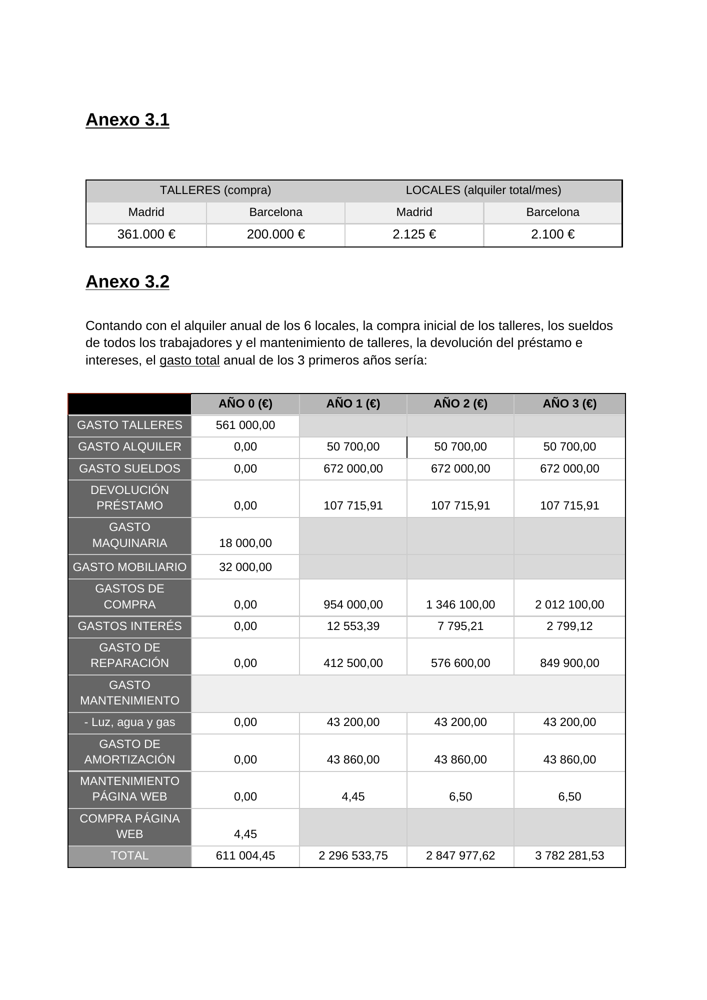

ORGE · 2022–2023 · Proyecto empresarial
Tech-Factory: plan de negocio de electrónica reacondicionada
Proyecto en equipo para diseñar una empresa dedicada a comprar, reparar y revender dispositivos electrónicos. El trabajo recorre estrategia, marketing, operaciones, organización y viabilidad económico-financiera.
La memoria original incluye fotografías y datos identificativos de compañeros, por lo que no se publica como descarga. Sí se conserva el modelo financiero y una evidencia anonimizada de los cálculos.
Propuesta
Dar una segunda vida a dispositivos electrónicos.
Estrategia
Misión, objetivos, análisis interno/externo y matriz DAFO.
Marketing
Mercado objetivo, producto, pricing, distribución y previsión de ventas.
Operaciones
Talleres, tiendas, aprovisionamiento, procesos y estructura de costes.
Finanzas
Inversión, financiación, balances, tesorería y evaluación de rentabilidad.
Modelo económico
De la inversión inicial a la viabilidad.
Evidencia
Desglose de inversión y gastos.

Competencias
Negocio y análisis cuantitativo
Entregable seleccionado